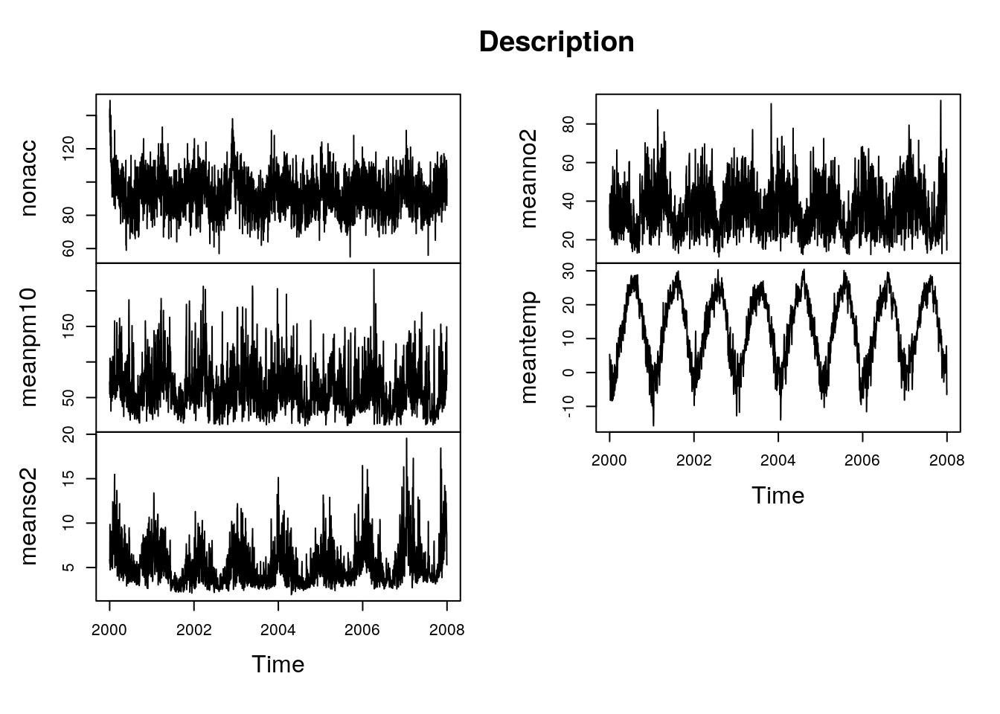
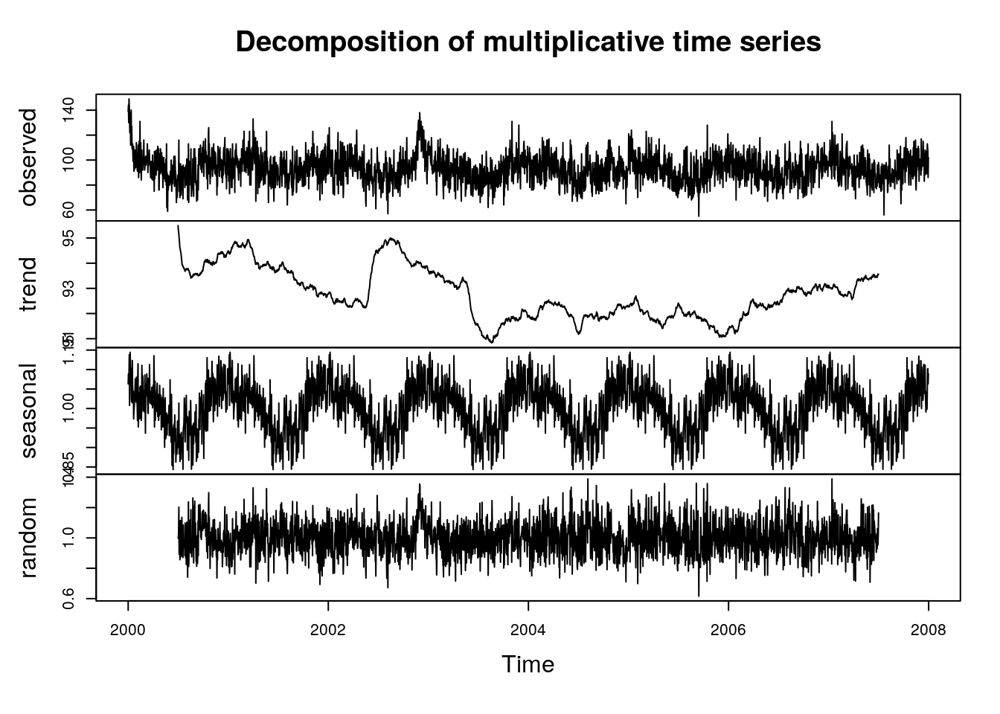
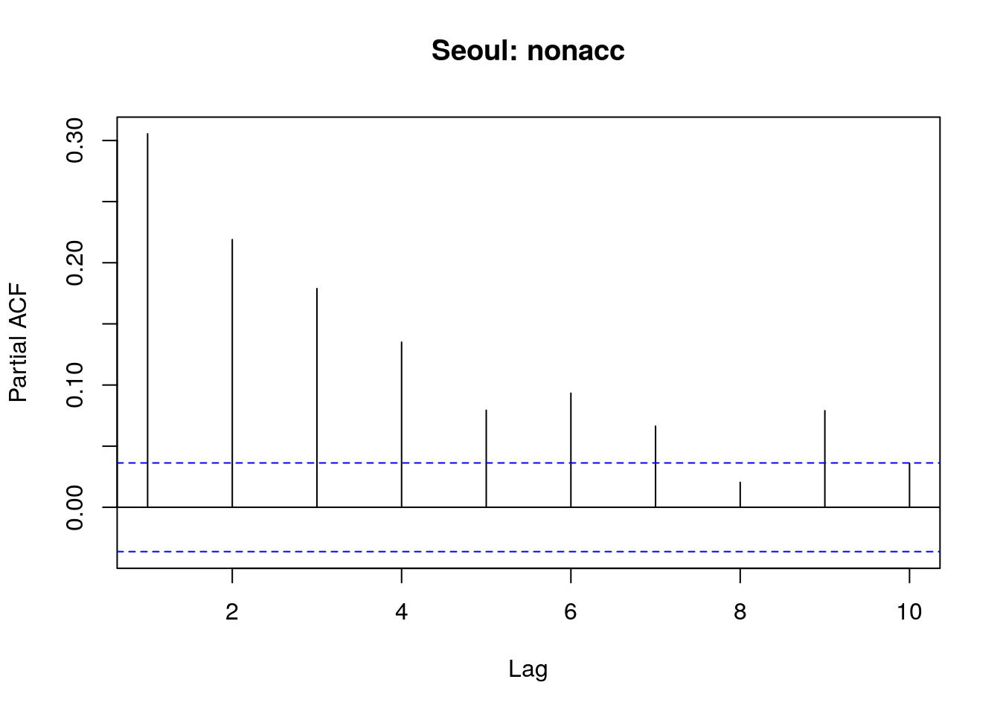
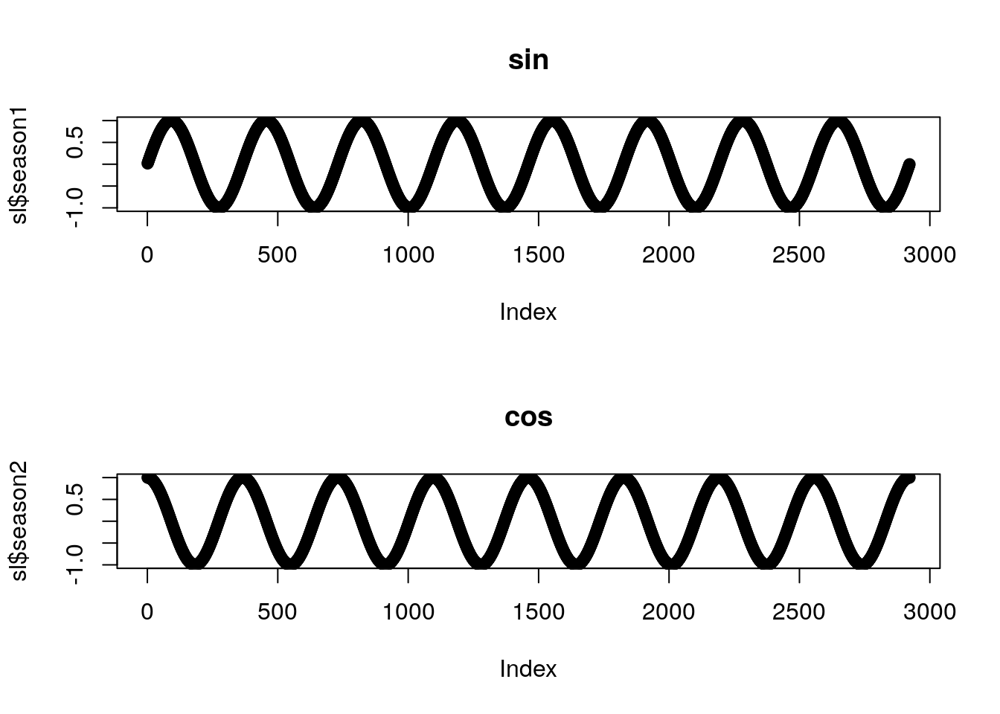
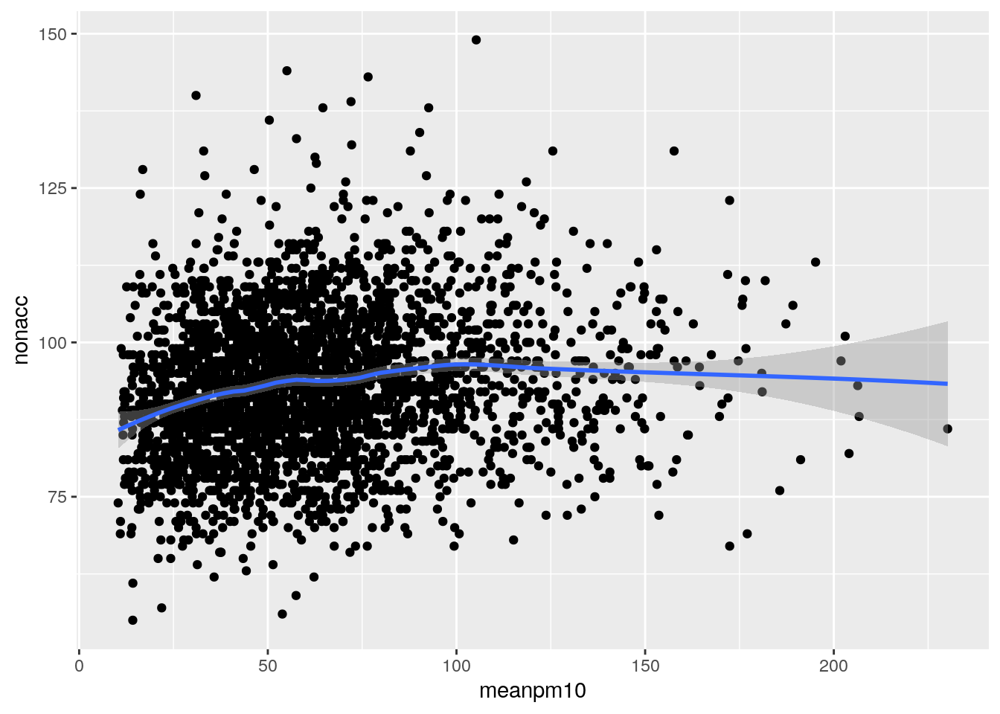
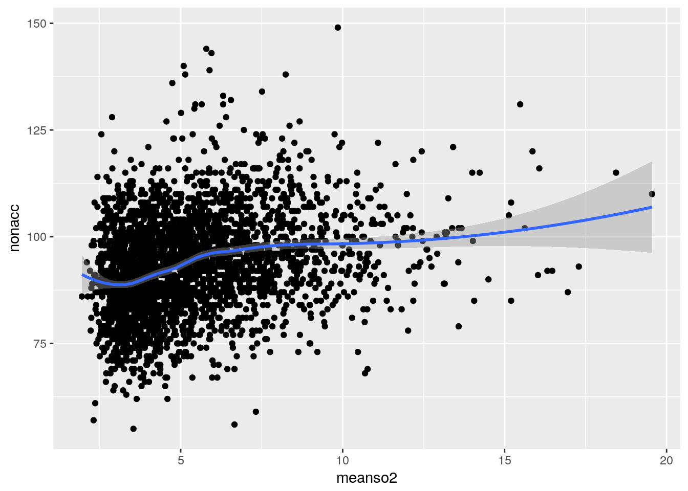
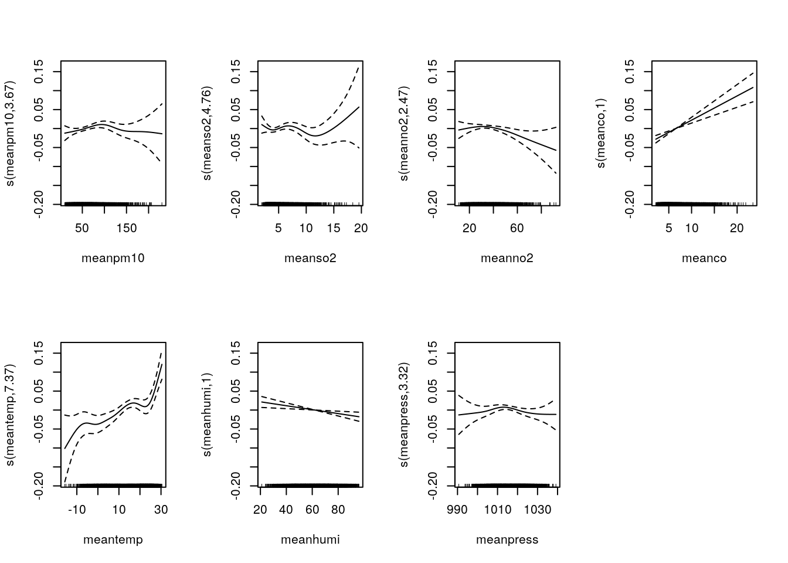
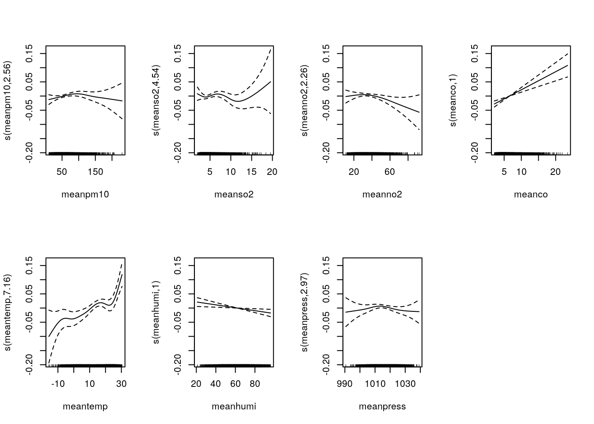

Generalized Additive Model: 고려대학교 의과대학
R: mgcv 패키지 실습
시작하기 전에
본 강의록은 GAM 이론은 생략한다. 이론은 https://www.slideshare.net/secondmath/generalized-additive-model 을 참고하기 바란다.
Example data: Korea airpolution
#install.packages("HEAT")
library(HEAT)
data(mort)
head(mort)| ccode | cname | yy | mm | dd | date | nonacc | cardio | respir | influenza | meanpm10 | meanso2 | meanno2 | meanco | maxco | maxo3 | meantemp | maxtemp | mintemp | meanhumi | meanpress | season | dow | sn |
|---|---|---|---|---|---|---|---|---|---|---|---|---|---|---|---|---|---|---|---|---|---|---|---|
| 11 | sl | 2000 | 1 | 1 | 2000-01-01 | 139 | 30 | 13 | NA | 72.05 | 5.89 | 38.18 | 11.22 | 12.84 | 21.35 | 5.34 | 9.4 | 2.0 | 64.38 | 1024.60 | 4 | 7 | 1 |
| 11 | sl | 2000 | 1 | 2 | 2000-01-02 | 144 | 34 | 16 | NA | 55.06 | 5.79 | 26.26 | 11.65 | 14.25 | 25.22 | 4.55 | 6.8 | -0.9 | 74.38 | 1016.29 | 4 | 1 | 2 |
| 11 | sl | 2000 | 1 | 3 | 2000-01-03 | 130 | 41 | 10 | NA | 62.50 | 5.42 | 27.84 | 10.04 | 10.50 | 19.96 | -2.13 | 0.0 | -4.4 | 55.42 | 1022.95 | 4 | 2 | 3 |
| 11 | sl | 2000 | 1 | 4 | 2000-01-04 | 149 | 37 | 18 | NA | 105.24 | 9.85 | 43.85 | 15.76 | 18.32 | 7.44 | 0.05 | 3.9 | -4.0 | 49.75 | 1024.99 | 4 | 3 | 4 |
| 11 | sl | 2000 | 1 | 5 | 2000-01-05 | 143 | 42 | 18 | NA | 76.58 | 5.95 | 39.86 | 13.76 | 14.63 | 9.29 | 2.66 | 4.6 | 0.2 | 82.33 | 1018.69 | 4 | 4 | 5 |
| 11 | sl | 2000 | 1 | 6 | 2000-01-06 | 136 | 38 | 4 | NA | 50.40 | 4.74 | 30.50 | 12.18 | 14.83 | 15.91 | 1.98 | 5.5 | -4.2 | 78.75 | 1015.85 | 4 | 5 | 6 |
Descriptive(Seoul): ts class
sl = subset(mort,ccode==11)
sl.ts = ts(sl, start=c(2000,1), frequency = 365.25)
plot(sl.ts[,c("nonacc","meanpm10","meanso2","meanno2","meantemp")],main="Description")
plot(decompose(sl.ts[,"nonacc"],type="multiplicative"))
ACF: Autocorrelation Function
acf(sl$nonacc,main="Seoul: nonacc",lag.max=10)
pacf(sl$nonacc,main="Seoul: nonacc",lag.max=10)
서울시 인구수: For offset
다음 자료를 참고하여 서울의 2000~2007년의 인구수 정보를 얻었다.
pop_seoul=data.frame(yy=2000:2007,pop=c(9895220, 9880180, 9865190, 9850200, 9835200, 9820170, 10020120, 10025670))
pop_seoul| yy | pop |
|---|---|
| 2000 | 9895220 |
| 2001 | 9880180 |
| 2002 | 9865190 |
| 2003 | 9850200 |
| 2004 | 9835200 |
| 2005 | 9820170 |
| 2006 | 10020120 |
| 2007 | 10025670 |
계절성 변수: sin, cos
sl$season1=sin(1:nrow(sl)/365.25*2*pi)
sl$season2=cos(1:nrow(sl)/365.25*2*pi)
par(mfrow=c(2,1))
plot(sl$season1,main="sin")
plot(sl$season2,main="cos")
Scatterplot
library(ggplot2)
ggplot(sl,aes(meanpm10,nonacc))+geom_point()+stat_smooth(method="loess",span=0.5)
ggplot(sl,aes(meanso2,nonacc))+geom_point()+stat_smooth(method="loess",span=0.5)
GLM
library(epiDisplay)
m1=glm(nonacc~meanpm10 + meanso2 + meanno2 + meanco + meantemp + meanhumi+ meanpress+ season1+season2, family=poisson, data=sl)
res1=idr.display(m1,crude.p.value = T)
res1| crude IDR(95%CI) | crude P value | adj. IDR(95%CI) | P(Wald’s test) | P(LR-test) | |
|---|---|---|---|---|---|
| meanpm10 (cont. var.) | 1.0006 (1.0005,1.0007) | < 0.001 | 1 (0.9999,1.0002) | 0.634 | 0.634 |
| meanso2 (cont. var.) | 1.01 (1.01,1.02) | < 0.001 | 1.0005 (0.9978,1.0032) | 0.735 | 0.735 |
| meanno2 (cont. var.) | 1.0022 (1.0019,1.0025) | < 0.001 | 0.9995 (0.999,1.0001) | 0.078 | 0.078 |
| meanco (cont. var.) | 1.01 (1.01,1.01) | < 0.001 | 1.0058 (1.0037,1.0079) | < 0.001 | < 0.001 |
| meantemp (cont. var.) | 0.9958 (0.9955,0.9962) | < 0.001 | 1.0037 (1.0024,1.0051) | < 0.001 | < 0.001 |
| meanhumi (cont. var.) | 0.9984 (0.9982,0.9987) | < 0.001 | 0.9994 (0.999,0.9997) | < 0.001 | < 0.001 |
| meanpress (cont. var.) | 1.005 (1.0045,1.0055) | < 0.001 | 1 (0.999,1.0009) | 0.957 | 0.957 |
| season1 (cont. var.) | 1.02 (1.01,1.02) | < 0.001 | 1.03 (1.02,1.04) | < 0.001 | < 0.001 |
| season2 (cont. var.) | 1.07 (1.07,1.08) | < 0.001 | 1.11 (1.09,1.13) | < 0.001 | < 0.001 |
| x |
|---|
| Log-likelihood = -11023.5412 |
No. of observations = 2921 AIC value = 22067.0825 |
Offset: Population number
sl_pop=merge(sl,pop_seoul,by="yy")
head(sl_pop)| yy | ccode | cname | mm | dd | date | nonacc | cardio | respir | influenza | meanpm10 | meanso2 | meanno2 | meanco | maxco | maxo3 | meantemp | maxtemp | mintemp | meanhumi | meanpress | season | dow | sn | season1 | season2 | pop |
|---|---|---|---|---|---|---|---|---|---|---|---|---|---|---|---|---|---|---|---|---|---|---|---|---|---|---|
| 2000 | 11 | sl | 1 | 1 | 2000-01-01 | 139 | 30 | 13 | NA | 72.05 | 5.89 | 38.18 | 11.22 | 12.84 | 21.35 | 5.34 | 9.4 | 2.0 | 64.38 | 1024.60 | 4 | 7 | 1 | 0.0172016 | 0.9998520 | 9895220 |
| 2000 | 11 | sl | 1 | 2 | 2000-01-02 | 144 | 34 | 16 | NA | 55.06 | 5.79 | 26.26 | 11.65 | 14.25 | 25.22 | 4.55 | 6.8 | -0.9 | 74.38 | 1016.29 | 4 | 1 | 2 | 0.0343981 | 0.9994082 | 9895220 |
| 2000 | 11 | sl | 1 | 3 | 2000-01-03 | 130 | 41 | 10 | NA | 62.50 | 5.42 | 27.84 | 10.04 | 10.50 | 19.96 | -2.13 | 0.0 | -4.4 | 55.42 | 1022.95 | 4 | 2 | 3 | 0.0515844 | 0.9986686 | 9895220 |
| 2000 | 11 | sl | 1 | 4 | 2000-01-04 | 149 | 37 | 18 | NA | 105.24 | 9.85 | 43.85 | 15.76 | 18.32 | 7.44 | 0.05 | 3.9 | -4.0 | 49.75 | 1024.99 | 4 | 3 | 4 | 0.0687554 | 0.9976335 | 9895220 |
| 2000 | 11 | sl | 1 | 5 | 2000-01-05 | 143 | 42 | 18 | NA | 76.58 | 5.95 | 39.86 | 13.76 | 14.63 | 9.29 | 2.66 | 4.6 | 0.2 | 82.33 | 1018.69 | 4 | 4 | 5 | 0.0859061 | 0.9963032 | 9895220 |
| 2000 | 11 | sl | 1 | 6 | 2000-01-06 | 136 | 38 | 4 | NA | 50.40 | 4.74 | 30.50 | 12.18 | 14.83 | 15.91 | 1.98 | 5.5 | -4.2 | 78.75 | 1015.85 | 4 | 5 | 6 | 0.1030314 | 0.9946781 | 9895220 |
m2=glm(nonacc~offset(log(pop))+meanpm10 + meanso2 + meanno2 + meanco + meantemp + meanhumi+ meanpress+ season1+season2, family=poisson, data=sl_pop)
res2=idr.display(m2,crude.p.value = T)
res2| crude IDR(95%CI) | crude P value | adj. IDR(95%CI) | P(Wald’s test) | P(LR-test) | |
|---|---|---|---|---|---|
| meanpm10 (cont. var.) | 1.0006 (1.0005,1.0007) | < 0.001 | 1.0001 (0.9999,1.0003) | 0.266 | 0.266 |
| meanso2 (cont. var.) | 1.01 (1.01,1.02) | < 0.001 | 0.999 (0.9963,1.0017) | 0.467 | 0.467 |
| meanno2 (cont. var.) | 1.0022 (1.0019,1.0025) | < 0.001 | 0.9996 (0.9991,1.0001) | 0.112 | 0.112 |
| meanco (cont. var.) | 1.01 (1.01,1.01) | < 0.001 | 1.006 (1.0039,1.0081) | < 0.001 | < 0.001 |
| meantemp (cont. var.) | 0.9958 (0.9955,0.9962) | < 0.001 | 1.0036 (1.0023,1.005) | < 0.001 | < 0.001 |
| meanhumi (cont. var.) | 0.9984 (0.9982,0.9987) | < 0.001 | 0.9994 (0.9991,0.9997) | < 0.001 | < 0.001 |
| meanpress (cont. var.) | 1.005 (1.0045,1.0055) | < 0.001 | 1 (0.9991,1.001) | 0.918 | 0.918 |
| season1 (cont. var.) | 1.02 (1.01,1.02) | < 0.001 | 1.03 (1.02,1.04) | < 0.001 | < 0.001 |
| season2 (cont. var.) | 1.07 (1.07,1.08) | < 0.001 | 1.11 (1.08,1.13) | < 0.001 | < 0.001 |
| x |
|---|
| Log-likelihood = -11027.097 |
No. of observations = 2921 AIC value = 22074.1939 |
Quasi-poisson
Overdispersion Problem: 포아송분포 가정에서는 평균=분산이 성립한다. 그러나 실제로 이런 경우는 많지 않다.
mean(sl_pop$nonacc)## [1] 93.1564var(sl_pop$nonacc)## [1] 135.3774이 때, 평균=\(\alpha\times\)분산 이 성립하는 \(\alpha\)를 추가하여 이를 해결한다. 이 결과 \(\beta\)값들은 포아송분포일 때와 동일하나 \(p\)-value가 바뀐다. 또한 모형평가하는 \(AIC\)같은 지표를 구할 수 없다.
m3=glm(nonacc~offset(log(pop))+meanpm10 + meanso2 + meanno2 + meanco + meantemp + meanhumi+ meanpress+ season1+season2, family=quasipoisson, data=sl_pop)
summary(m3)##
## Call:
## glm(formula = nonacc ~ offset(log(pop)) + meanpm10 + meanso2 +
## meanno2 + meanco + meantemp + meanhumi + meanpress + season1 +
## season2, family = quasipoisson, data = sl_pop)
##
## Deviance Residuals:
## Min 1Q Median 3Q Max
## -3.7976 -0.7554 -0.0389 0.6881 4.1180
##
## Coefficients:
## Estimate Std. Error t value Pr(>|t|)
## (Intercept) -1.166e+01 5.349e-01 -21.796 < 2e-16 ***
## meanpm10 9.207e-05 9.026e-05 1.020 0.30778
## meanso2 -1.006e-03 1.510e-03 -0.666 0.50527
## meanno2 -4.133e-04 2.841e-04 -1.455 0.14580
## meanco 5.966e-03 1.179e-03 5.061 4.43e-07 ***
## meantemp 3.637e-03 7.398e-04 4.917 9.29e-07 ***
## meanhumi -6.087e-04 1.861e-04 -3.271 0.00108 **
## meanpress 4.896e-05 5.217e-04 0.094 0.92525
## season1 2.572e-02 5.225e-03 4.922 9.04e-07 ***
## season2 1.001e-01 1.046e-02 9.563 < 2e-16 ***
## ---
## Signif. codes: 0 '***' 0.001 '**' 0.01 '*' 0.05 '.' 0.1 ' ' 1
##
## (Dispersion parameter for quasipoisson family taken to be 1.190775)
##
## Null deviance: 4227.2 on 2920 degrees of freedom
## Residual deviance: 3458.8 on 2911 degrees of freedom
## (1 observation deleted due to missingness)
## AIC: NA
##
## Number of Fisher Scoring iterations: 4summary(m2) ## 비교##
## Call:
## glm(formula = nonacc ~ offset(log(pop)) + meanpm10 + meanso2 +
## meanno2 + meanco + meantemp + meanhumi + meanpress + season1 +
## season2, family = poisson, data = sl_pop)
##
## Deviance Residuals:
## Min 1Q Median 3Q Max
## -3.7976 -0.7554 -0.0389 0.6881 4.1180
##
## Coefficients:
## Estimate Std. Error z value Pr(>|z|)
## (Intercept) -1.166e+01 4.902e-01 -23.784 < 2e-16 ***
## meanpm10 9.207e-05 8.271e-05 1.113 0.265656
## meanso2 -1.006e-03 1.384e-03 -0.727 0.467175
## meanno2 -4.133e-04 2.603e-04 -1.588 0.112368
## meanco 5.966e-03 1.080e-03 5.523 3.34e-08 ***
## meantemp 3.637e-03 6.780e-04 5.365 8.09e-08 ***
## meanhumi -6.087e-04 1.705e-04 -3.570 0.000357 ***
## meanpress 4.896e-05 4.781e-04 0.102 0.918443
## season1 2.572e-02 4.789e-03 5.371 7.82e-08 ***
## season2 1.001e-01 9.589e-03 10.435 < 2e-16 ***
## ---
## Signif. codes: 0 '***' 0.001 '**' 0.01 '*' 0.05 '.' 0.1 ' ' 1
##
## (Dispersion parameter for poisson family taken to be 1)
##
## Null deviance: 4227.2 on 2920 degrees of freedom
## Residual deviance: 3458.8 on 2911 degrees of freedom
## (1 observation deleted due to missingness)
## AIC: 22074
##
## Number of Fisher Scoring iterations: 4GAM
m4=gam(nonacc~offset(log(pop))+s(meanpm10) + s(meanso2) + s(meanno2) + s(meanco) + s(meantemp) + s(meanhumi)+ s(meanpress)+ season1+season2, family=poisson, data=sl_pop)
summary(m4)$edf ## Effective Degree of Freedom## [1] 3.807163 4.760341 2.475957 1.000345 7.366874 1.001397 3.315617AIC(m4) ## AIC## [1] 22016.49par(mfrow=c(2,4))
plot(m4)
Quasipoisson
m5=gam(nonacc~offset(log(pop))+s(meanpm10) + s(meanso2) + s(meanno2) + s(meanco) + s(meantemp) + s(meanhumi)+ s(meanpress)+ season1+season2, family=quasipoisson, data=sl_pop)
summary(m5)$edf ## Effective Degree of Freedom## [1] 2.558830 4.535913 2.256126 1.000157 7.157007 1.001493 2.973903AIC(m5) ## No AIC## [1] NApar(mfrow=c(2,4))
plot(m5)
Copyright ©2016 Jinseob Kim